ELECTRÓNICA DIGITAL
ELECTRÓNICA DIGITAL
Objetivos de esta Unidad
-
Que conozcas y manejes conceptos sencillos: electrónica analógica, electrónica digital, etc.
-
Que hagas cálculos sencillos y simplificaciones con funciones lógicas, tablas de verdad, etc.
-
Que implementes circuitos sencillos con puertas lógicas.
-
Que apliques conocimientos obtenidos en otras áreas, como Matemáticas, Física y Química, Ciencias Sociales, Educación Plástica y Visual, etc.
-
Que valores la importancia que tiene hoy en día la electrónica digital en muchos aspectos de la vida cotidiana.
1. Introducción: de lo analógico a lo digital
No cabe duda de que en el mundo de hoy en día la Electrónica juega un papel de vital importancia. En la Unidad anterior has estudiado la electrónica analógica, que permite infinidad de aplicaciones. Recuerda que un circuito analógico puede funcionar con diversos rangos de tensiones.
Sin embargo, en los circuitos digitales sólo hay 2 voltajes. Esto significa que al utilizar 2 estados lógicos se puede asociar cada uno con un nivel de tensión, así se puede codificar cualquier número, letra del alfabeto u otra información. Estos 2 estados de tensión reciben diferentes nombres, los más utilizados son estado lógico 0 y estado lógico 1, o bien falso y verdadero, respectivamente.
Al utilizarse sólo dos estados lógicos (0 y 1) se dice que la lógica digital es binaria, ya que el código binario se basa en la utilización de dos únicas cifras, 0 y 1. Una de las principales ventajas de este sistema es la sencillez de sus reglas aritméticas, que hacen de él un sistema apropiado para el uso de computadores y dispositivos digitales.
 En 1854, el matemático inglés George Boole publica "Las leyes del pensamiento", donde da a conocer el álgebra que lleva su nombre. Este álgebra permite explicar las leyes fundamentales de aquellas operaciones de la mente humana por la que se rigen los razonamientos.
En 1854, el matemático inglés George Boole publica "Las leyes del pensamiento", donde da a conocer el álgebra que lleva su nombre. Este álgebra permite explicar las leyes fundamentales de aquellas operaciones de la mente humana por la que se rigen los razonamientos.
En 1938, el matemático Claude Shannon demostró cómo las operaciones booleanas elementales se podían representar mediante circuitos eléctricos, y cómo la combinación de circuitos podía representar operaciones aritméticas y lógicas complejas. Además demostró que el álgebra de Boole se podía usar para simplificar circuitos conmutadores. El enlace lógica-electrónica estaba establecido.
En 1942 funcionó la ABC, la primera computadora digital, y en 1946 se terminaba el ENIAC, primera computadora electrónica.
En 1960 aparece el primer circuito integrado, y con él la revolución en este campo. Los circuitos integrados se adaptaron perfectamente a la lógica digital.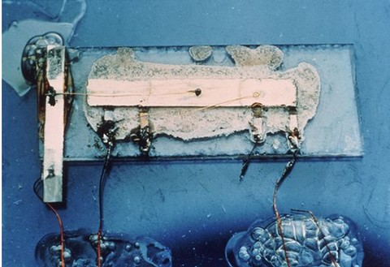
Las aplicaciones más representativas de la electrónica digital son:
- Sistemas de control industrial (controladores o autómatas programables).
- Equipos de proceso de datos (tratamiento de datos, ordenadores).
- Otros equipos y productos electrónicos (electrodomésticos, alarmas, etc.).
Hoy en día, la palabra "digital" aparece en multitud de situaciones, y siempre asociada a cosas novedosas. La expresión "sonido digital" nos "suena" muy bien. Creemos que es un sonido perfecto. Lo asociamos a un CD, o al audio de una película en DVD, que consideramos casi real.
Llevamos tiempo con televisión digital por satélite y, desde noviembre de 2005, la Televisión Digital Terrestre es una realidad en vuestras casas. Gracias a un decodificador digital-analógico, podéis recibir unas imágenes y sonidos de una calidad bastante superiores a los que teníais antes.
2. Operaciones binarias
En primer lugar, conviene que te familiarices con las operaciones elementales del sistema binario de numeración.
Lo primero que te va a chocar es la apariencia tan "extraña" que toman los números. Pero eso es normal: llevas mucho tiempo trabajando con el sistema decimal (el que tiene diez cifras), y debes acostrumbrarte ahora a trabajar sólo con dos.
No te preocupes. No será muy complicado.
2.1. Ideas previas.
Recordemos, que un número como 10, en sistema binario, no debe leerse como "diez", sino como "uno","cero". Para aclararnos mientras estemos manejando dos sistemas de numeración diferentes, colocaremos en la parte inferior derecha 2) o 10), según estemos hablando de un número en sistema binario o decimal, respectivamente.
Así, por ejemplo, 112) deberá leerse como "uno uno en sistema binario", y 1110) se leerá como once, igual que hasta ahora.
2.2. El nibble o cuado
Se llama bit a un único dígito binario (ten en cuenta, según esto, que podemos decir que un bit es la mínima cantidad de información que somos capaces de escribir). Los sucesivos números binarios tendrán cada vez más y más bits en su expresión. Así, el número “3” decimal tendrá la expresión binaria “11”, que contiene dos bits.
Los bits pueden ir añadiéndose progresivamente, pero ciertas agrupaciones reciben nombres característicos que conviene conocer. Así, por ejemplo, un nibble es, un paquete de cuatro bits, como éste:
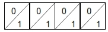
El nibble tiene su importancia, por ejemplo, en el sistema hexadecimal, donde los dieciséis dígitos del mismo pueden componerse con los dieciséis nibbles posibles.
2.3. El byte
Si se nos ocurre juntar dos nibbles, obtendremos una nueva entidad, a la que llamaremos byte y que, por tanto, estará compuesta de ocho bits.
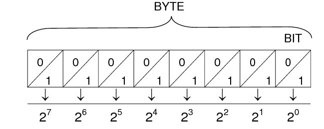
2.4. Conversión de binario a decimal.
En el diagrama de la derecha, vemos que cada cifra (bit) puede tomar únicamente dos valores, los ya citados 0 y 1. Pero, dependiendo de la posición del bit, la importancia o peso que tiene cada uno no es la misma. Así, por ejemplo, mientras que un uno en la primera casilla tendría un peso de "1", en la cuarta casilla desde la derecha tendría un peso de 23 = 8. Unos ejemplos:
Ahora, tú
Fácil, ¿no? Pues anímate a averiguar los siguientes números en sistema decimal para entrenarte:
|
1001 |
1 1010 |
1011 |
100 1001 |
101 1001 |
Nota: observa que hemos dejado un espacio entre cada cuatro bits. Conviene que te acostumbres a esto, ya que te será de utilidad de aquí en adelante.
2.5. Conversión de decimal a binario.
Para convertir de decimal, el proceso es un poco más complicado. Necesitamos una técnica, a la que llamaremos algoritmo de la división. Consiste en dividir tantas veces por dos como se pueda, y los restos y el último cociente obtenido nos proporcionan la expresión binaria (invertida) de nuestro número decimal.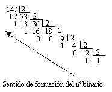
Ahora, tú
Convierte de decimal a binario los siguientes números:
| 2510) |
|
10110) | |
25510) |
2.6. El sistema hexadecimal
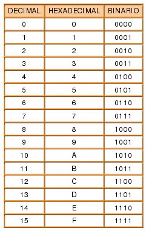Aunque los circuitos electrónicos digitales y los ordenadores utilizan el sistema binario, trabajar con este sistema de numeración resulta pesado, y suele producir equivocaciones cuando se trabaja con números binarios demasiado largos.
El sistema hexadecimal está en base 16, sus números están representados por los 10 primeros dígitos de la numeración decimal, y el intervalo que va del número 10 al 15 están representados por las letras del alfabeto de la A a la F.
Actualmente el sistema hexadecimal es uno de los más utilizados en el procesamiento de datos, debido principalmente a 2 ventajas:
La primera ventaja es la simplificación en la escritura de los números decimales, cada 4 cifras binarias se representan por una hexadecimal.
La segunda es que cada cifra hexadecimal se pueden expresar mediante 4 cifras binarias, con lo que se facilita la transposición entre estos 2 sistemas. Para convertir un número binario en hexadecimal se realiza el mismo proceso, pero a la inversa.
Ejemplo:
|
Número Hexadecimal: B7E16) B: 1011 (11) 7: 0111 E: 1110 (14) |
Número Binario: 1011 0111 11102) |
Para pasar del número hexadecimal al sistema decimal, se han de multiplicar los dígitos hexadecimales por las distintas potencias de base 16 que representan cada dígito del sistema de numeración hexadecimal (160, 161, 162...).
Ejemplo:
B7E16) = 11•162 + 7•161 + 14•160 = 2816 + 112 + 14 = 2.94210)
A la inversa, para convertir el número decimal en hexadecimal, éste se irá dividiendo por el número 16 sucesivamente hasta que ya no se puedan realizar más divisiones con el mismo número. El número hexadecimal resultante estará formado por el último cociente seguido de todos los restos sucesivos obtenidos desde el último hasta el primero. Veamos, por ejemplo, qué sucede con el 350
|
Expresión decimal:
|
Nº Hexadecimal: 15E16) |

Otra posibilidad en la conversión de números decimales y hexadecimales es utilizar los binarios como intermediarios, es decir, en cualquiera de los sentidos, se obtendría en primer lugar el número binario y después éste pasaría al código definitivo.
Por último, otra posibilidad de cálculo la ofrecen las calculadoras de sobremesa o las que suelen venir con algunos sistemas operativos. En ese caso basta teclear la cantidad estando seleccionado un sistema: binario, octal, hexadecimal o decimal, y después conmutar al sistema de destino deseado y el número aparecerá automáticamente.
Aquí vemos la expresión decimal:
y aquí la expresión hexadecimal:
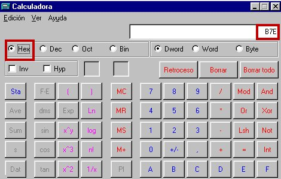
2.7. Suma de dos números binarios.
Para sumar en sistema binario, basta recordar que sólo disponemos de dos números, el cero y el uno. Así pues, cuando nos pasemos del 1, habrá que "llevarse" una cifra y colocarla a la izquierda de la que tenemos. O, simplemente, tener en cuenta que 1+1 sigue siendo igual a 2, salvo que en binario "2" se escribe "10". En definitiva, puedes utilizar las siguientes reglas:
|
0 + 0 = 0 |
|
0 + 1 = 1 |
|
1 + 1 = 1 |
Veamos algunos ejemplos:
|
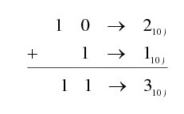 |
|
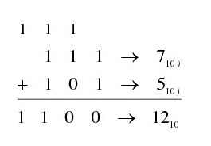 |
2.8. Diferencia de dos números binarios.
Para hacer la diferencia binaria, utilizaremos el siguiente algoritmo o procedimiento, que obtiene la diferencia binaria a partir de una suma:
- Colocar el minuendo.
- Colocar el sustraendo bajo el minuendo, pero con las cifras invertidas, cambiando ceros por unos y unos por ceros.
- Colocar tantos "1" a la izquierda del nuevo sustraendo como sea necesario para que ambos tengan las mismas cifras.
- Añadir un "1" como tercera fila de la suma.
- Efectuar la suma.
- Quitar la cifra de la izquierda del resultado. Nos ha quedado escrito el número que es la diferencia de los dos que nos han dado.
Desarrollemos este algoritmo para hacer la diferencia de 1310) = 11012) y 510) = 1012):
3. Función lógica. Tabla de verdad.
Para que podamos llegar a manejar circuitos lógicos, en primer lugar hemos de conocer qué es una función lógica. Es lo que nos vamos a encontrar en el apartado 3.1., donde vamos a fijar unas definiciones que nos vendrán bien para el resto del tema.
Posteriormente, conoceremos las funciones lógicas básicas, a partir de las cuales podemos construir todas las demás.
Por último, haremos una breve incursión en el Álgebra de Boole, una estructura matemática de gran interés, que nos permitirá controlar el funcionamiento de nuestros circuitos.
3.1. Definiciones básicas.
Variable lógica
Función lógica
Tabla de verdad
3.2. Funciones básicas.
Función cero
| EXPRESIÓN | TABLA DE VERDAD | CIRCUITO EQUIVALENTE |
| F = 0 |
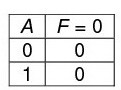 |
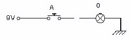 |
Función identidad
| EXPRESIÓN | TABLA DE VERDAD | CIRCUITO EQUIVALENTE |
| F = 1 |
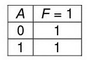 | 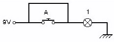 |
Función igualdad
| EXPRESIÓN | TABLA DE VERDAD |
CIRCUITO EQUIVALENTE |
| F = A |
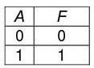 | 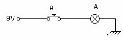 |
Función negación
| EXPRESIÓN | TABLA DE VERDAD |
CIRCUITO EQUIVALENTE |
| 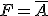 |
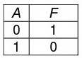 | 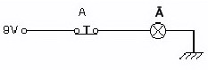 |
Función suma o unión
| EXPRESIÓN | TABLA DE VERDAD |
CIRCUITO EQUIVALENTE |
| F = A+B | 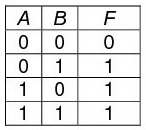 |
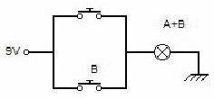 |
Función producto o intersección
| EXPRESIÓN | TABLA DE VERDAD | CIRCUITO EQUIVALENTE |
| F = A·B |
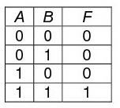 | 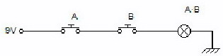 |
3.3. Álgebra de Boole
El álgebra de Boole es una estructura matemática, que cuenta con dos números (0 y 1) y tres operaciones (suma, producto y negación).
Parte de unos postulados iniciales, de los que se pueden deducir leyes, teoremas y otras consecuencias. Veámoslos:
Postulados del Álgebra de Boole
- Postulado 1. El elemento identidad de la suma es el "0". (A + 0 = A)
- Postulado 2. El elemento de identidad del producto es el "1". (A · 1 = A)
- Postulado 3. La suma es conmutativa A + B = B + A
- Postulado 4. El producto es conmutativo: A · B = B · A
- Postulado 5. La suma es asociativa: (A + B) + C = A + (B + C)
- Postulado 6. El producto es asociativo: (A · B) · C = A · (B · C)
- Postulado 7. El producto es distributivo respecto de la suma:
A · (B + C) = (A · B) + (A · C)
- Postulado 8. La suma es distributiva respecto del producto:
A + (B · C) = (A + B) · ( A + C).
- Postulado 9. Para cada valor A existe un valor Ā tal que A· Ā = 0 y A + Ā = 1. Éste valor es el complemento lógico o negado de A.
- Postulado 10. El álgebra de Boole es cerrada bajo las operaciones suma, producto y negación.
Teoremas del Álgebra de Boole
- Teorema 1: 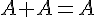
-
Teorema 2: 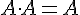
- Teorema 3:

- Teorema 4:

- Teorema 5: 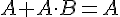
- Teorema 6: 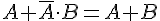
- Teorema 7: 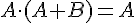
- Teorema 8:
- Teorema 9:

- Teorema 10: 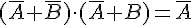
Leyes de De Morgan
Son dos leyes importantísimas dentro del Álgebra de Boole. Afirman lo siguiente:

4. Puertas lógicas.
Una puerta lógica es un circuito electrónico que tiene el mismo comportamiento que una función lógica. Por tanto, la tabla de verdad de una puerta lógica es la misma que las de una función lógica.
Las puertas lógicas tienen una única salida, aunque pueden tener una o más entradas. Las puertas lógicas a la salida pueden dar niveles de tensión alto (1) o niveles de tensión bajo (0).
En estos dispositivos hay que tener en cuenta que dependiendo de la tecnología del fabricante de los circuitos (TTL y CMOS) varían los niveles de tensión en las entradas y en las salidas. Esto hay que tenerlo en cuenta ya que en la electrónica digital lo que se pretende es enviar la información más fiable posible. Por ejemplo el voltaje de alimentación de las puertas TTL es de 5 V, mientras que el de las puertas CMOS varía entre 3 y 15 V.
4.1. Puerta NOT.
| SÍMBOLO | TABLA DE VERDAD |
| 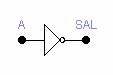 | 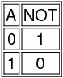 |
La figura muestra es símbolo de un circuito NOT, al cual se le llama más comúnmente INVERSOR. Este circuito siempre tiene una sola entrada y su nivel lógico de salida siempre es contrario al nivel lógico de esta entrada. Junto a la figura, se indica la tabla de verdad de esta función.
4.2. Puerta OR.
| SÍMBOLO | TABLA DE VERDAD |
| 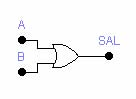 | 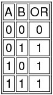 |
4.3. Puerta AND.
| SÍMBOLO | TABLA DE VERDAD |
| |
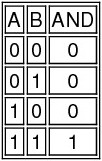 |
En la figura se muestra el símbolo de una puerta AND de dos entradas. La salida de la puerta AND es igual al producto lógico de las entradas.
4.4. Puerta NOR.
| SÍMBOLO | TABLA DE VERDAD |
| 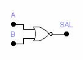 | 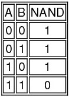 |
4.5. Puerta NAND.
| SÍMBOLO | TABLA DE VERDAD |
| 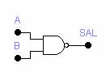 |
En la figura se muestra el símbolo correspondiente a una puerta NAND de dos entradas. Es el mismo que el de la puerta AND, excepto por el pequeño circulo en su salida, que vuelve a indicar la operación de inversión.
4.6. Puerta XOR u OR-EX.
| SÍMBOLO | TABLA DE VERDAD |
| 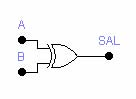 | 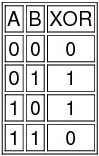 |
En la figura se muestra el símbolo de una puerta XOR de dos entradas. La salida es 1 lógico si y solo si A es diferente de B. Si A y B son ambas 0 lógico o ambas son 1 lógico entonces SAL vale 0.
La tabla de verdad la tienes junto al símbolo de la puerta. Observa que es parecido al de la puerta OR
Puede
representarse como la función siguiente:
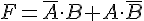
4.7. Puerta XNOR o NOR-EX.
| SÍMBOLO | TABLA DE VERDAD |
| 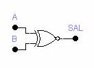 | 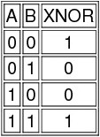 |
La salida de esta puerta es un 1 lógico si y solo si las dos entradas son iguales, ya sea que ambas sean 0 o ambas 1.
La tabla de verdad la tienes junto al símbolo de la puerta. Observa que es parecido al de la puerta NOR
Esto puede representarse mediante la función siguiente: 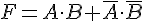
5. La electrónica digital en el mercado.
Los circuitos integrados o CI's, se han convertido en el componente más importante de la electrónica moderna y se forman o fabrican con la unión de varios componentes comunes como transistores, diodos, resistencias y hasta condensadores, en un solo envoltorio y configurados ya como un circuito completo (chip).
Al aumentar la densidad y reducir el tamaño al mismo tiempo, se presenta un avance importantísimo en el diseño de circuitos electrónicos.
Usando la misma tecnología de los transistores, con ellos es posible agrupar cientos o miles de componentes en un envoltorio, que es similar en tamaño a un condensador pequeño.
Los circuitos integrados digitales se clasifican por familias. Las más populares son:
- La familia TTL (Transistor-Transistor Logic o Lógica transistor-transistor). Se identifican generalmente con un número o combinación de números y letras. Generalmente su referencia empieza con el número 74 (véase la tabla adjunta). Como, por ejemplo, 7400, 7402, etc.
- La familia CMOS (Complementary Metal Oxide Semiconductor). Se identifican generalmente con el número 4000 y posteriores, como 4001, 4002, etc. Esta familia requiere un manejo especial ya que la electricidad estática del cuerpo humano podría dañarlos al tocar sus terminales.
Cada
circuito integrado tiene cierto número de pines o terminales. Es muy importante
saber dónde va conectado cada terminal, ya que si se conecta en forma errada se
 puede
dañar fácilmente.
puede
dañar fácilmente.
Para eso se recomiendan los manuales técnicos, como el TTL Cookbook y el CMOS Cookbook, manual de reemplazos ECG o los manuales de los fabricantes.
Se deben tener en cuenta las siguientes consideraciones:
- La ranura y el punto son para localizar el pin #1.
- El terminal o pin #1, esta señalado por el punto que está a la izquierda de la ranura.
- Los pines están numerados en el sentido contrario a las manecillas del reloj en forma de U
- Los circuitos integrados vienen en configuraciones de 8, 14, 16, 18, 20, 24, 40 y 64 pines.
A menud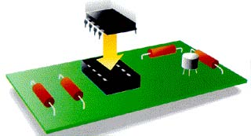o los circuitos integrados no se sueldan directamente al circuito impreso. Para colocarlos, se pone primero una base en el circuito y luego los integrados se enchufan en las bases.
Circuitos Integrados comerciales con tecnología TTL


Circuitos integrados comerciales con tecnología CMOS


{kind=link}
{kind=link}
{kind=link}
 ¿Cómo se emplean estos circuitos integrados?
¿Cómo se emplean estos circuitos integrados?
Pues bien, imagina que quieres implementar la función  .
.
La tabla de verdad de esta función es la que aparece en la derecha. De ella se deduce que la salida de la función únicamente es cero cuando A = B = C = 0; A = C = 0, B = 1 y A = 1, B = C = 0.
Para "observar" el comportamiento de la función F vamos a montar un circuito electrónico, en el que el encendido de una lámpara indicará un "1" de dicha función. Si la lámpara está apagada, sin embargo, tendremos un "0" de la función.
En la función F tenemos dos operaciones: un producto y una suma lógicos. Por tanto, necesitaremos un C.I. con puertas AND (el 7408) y otro con puertas OR (el 7432).
Para simular las variables A, B y C, emplearemos pulsadores normalmente abiertos (NA) con esos nombres, y seguiremos el convenio utilizado hasta ahora: 0 = desactivado, 1 = activado.
Conectamos los pulsadores A y B, respectivamente, a las patillas 13 y 12 del 7408. Esto efectúa el producto lógico de ambas variables. La salida de esta puerta lógica (patilla 11) se conecta a una puerta del circuito 7432, por ejemplo, en su patilla 9. A la otra entrada (patilla 10) conectamos el tercer pulsador. Con esto, se efectúa la segunda operación (la suma), la cual tenemos disponible a la salida de la puerta OR correspondiente (patilla 8).
No hay que olvidar conectar las correspondientes alimentaciones (VCC) y las masas (GND).

El objetivo de todo diseñador de circuitos lógicos debe ser el conseguir un circuito empleando el menor número de puertas lógicas posibles y, con ello, el menor número de circuitos integrados posible.
Es muy común, sin embargo, emplear sólo puertas NAND (C.I. 7400) o sólo puertas NOR (C.I. 7402), para lo cual hay que transformar la función lógica del sistema mediante procedimientos algebraicos para transformar el aspecto de la función F.
Extras
¿Qué dice Wikipedia del...
Circuito integrado
De Wikipedia, la enciclopedia libre
{kind=link}
Un circuito integrado (CI) o chip, es una pastilla muy delgada en la que se encuentra una enorme cantidad (del orden de miles o millones) de dispositivos microelectrónicos interconectados, principalmente diodos y transistores, además de componentes pasivos como resistencias o condensadores. Su área es de tamaño reducido, del orden de un cm² o inferior. Algunos de los circuitos integrados más avanzados son los microprocesadores, que son usados en múltiples artefactos, desde computadoras hasta electrodomésticos, pasando por los teléfonos móviles. Otra familia importante de circuitos integrados la constituyen las memorias digitales.
Tabla de contenidos |
Introducción
En Abril de 1949, el ingeniero alemán Werner Jacobi (Siemens AG) completa la primera solicitud de patente para circuitos integrados como semiconductores amplicadores de dispositivos. Jacobi realizó una tipica aplicación industrial para su patente, la cual no fue reportada.
Mas tarde la integración de circuitos fue concebida por un científico de radares Geoffrey W.A. Dummer (1909-2002), trabajando para Royal Radar Establishment del Ministerio de Defensa Británico, y publicado en Washington, D.C. en Mayo 7, 1952. A Dummer no le fue posible construir los circuitos en 1956.
El primer CI fue desarrollado en 1958 por el ingeniero Jack Kilby justo meses después de haber sido contratado por la firma Texas Instruments. Se trataba de un dispositivo de germanio que integraba seis transistores en una misma base semiconductora para formar un oscilador de rotación de fase.
En el año 2000 Kilby fue galardonado con el Premio Nobel de Física por la contribución de su invento al desarrollo de la tecnología de la información.
La historia de los circuitos integrados podría explicar un poco porque nuestro mundo esta lleno de estos. Por ejemplo, el microprocesador es un circuito integrado que procesa toda la información en una computadora; este mantiene un registro de las teclas que se han presionado y de los movimientos del ratón, cuenta los números y ejecuta los programas, juegos y el sistema operativo. Los circuitos integrados también se encuentran en todos los aparatos electrónicos modernos como lo son los automóviles, televisores, reproductores de cd’s, reproductores de MP3, teléfonos móviles, etc. Los circuitos integrados fueron posibles gracias a descubrimientos experimentales que demostraron que los semiconductores pueden realizar las funciones de los tubos de vacío. La integración de grandes cantidades de diminutos transistores en pequeños chips fue un enorme avance sobre el ensamblaje manual de los tubos de vacío (válvulas) y circuitos utilizando componentes discretos. La capacidad de producción masiva de circuitos integrados, confiabilidad y facilidad de agregarles complejidad, impuso la estandarización de los CIs en lugar de diseños utilizando transistores que pronto dejaron obsoletas a las válvulas o tubos de vacío. Existen dos ventajas principales de los CIs sobre los circuitos convencionales: coste y rendimiento. El bajo coste es debido a que los chips, con todos sus componentes, son impresos como una sola pieza por fotolitografía y no construidos por transistores de a uno por vez.
Avances en los circuitos integrados
Los avances que hicieron posible el circuito integrado han sido, fundamentalmente, los desarrollos en la fabricación de dispositivos semiconductores a mediados del siglo XX y los descubrimientos experimentales que mostraron que estos dispositivos podían reemplazar las funciones de las válvulas o tubos de vacío,que se volvieron rápidamente obsoletos al no poder competir con el pequeño tamaño, el consumo de energía moderado, los tiempos de conmutación mínimos, la confiabilidad, la capacidad de producción en masa y la versatilidad de los CI.
Entre los circuitos integrados más avanzados se encuentran los microprocesadores, que controlan todo desde computadoras hasta teléfonos móviles y hornos microondas. Los chips de memorias digitales son otra familia de circuitos integrados que son de importancia crucial para la moderna sociedad de la información. Mientras que el costo de diseñar y desarrollar un circuito integrado complejo es bastante alto, cuando se reparte entre millones de unidades de producción el costo individual de los CIs por lo general se reduce al mínimo. La eficiencia de los CIs es alta debido a que el pequeño tamaño de los chips permite cortas conexiones que posibilitan la utilización de lógica de bajo consumo (como es el caso de CMOS) en altas velocidades de conmutación.
Con el transcurso de los años, los CIs están constantemente migrando a tamaños más pequeños con mejores características, permitiendo que mayor cantidad de circuitos sean empaquetados en cada chip (véase la ley de Moore). Al mismo tiempo que el tamaño se comprime, prácticamente todo se mejora (el costo y el consumo de energía disminuyen y la velocidad aumenta). Aunque estas ganancias son aparentemente para el usuario final, existe una feroz competencia entre los fabricantes para utilizar geometrías cada vez más delgadas. Este proceso, y el esperado proceso en los próximos años, está muy bien descrito por la International Technology Roadmap for Semiconductors, o ITRS.
Popularidad de los CIs
Solo ha trascurrido medio siglo desde que se inició su desarrollo y los circuitos integrados se han vuelto casi omnipresentes. Computadoras, teléfonos móviles y otras aplicaciones digitales son ahora partes inextricables de las sociedades modernas. La informática, las comunicaciones, la manufactura y los sistemas de transporte, incluyendo Internet, todos dependen de la existencia de los circuitos integrados. De hecho, muchos estudiosos piensan que la revolución digital causada por los circuitos integrados es uno de los sucesos más significativos de la historia de la humanidad.
Tipos
Existen tres tipos de circuitos integrados:
- Circuitos monolíticos: Están fabricados en un solo monocristal, habitualmente de silicio, pero también existen en germanio, arseniuro de galio, silicio-germanio, etc.
- Circuitos híbridos de capa fina: Son muy similares a los circuitos monolíticos, pero, además, contienen componentes difíciles de fabricar con tecnología monolítica. Muchos conversores A/D y conversores D/A se fabricaron en tecnología híbrida hasta que los progresos en la tecnología permitieron fabricar resistencias precisas.
- Circuitos híbridos de capa gruesa: Se apartan bastante de los circuitos monolíticos. De hecho suelen contener circuitos monolíticos sin cápsula (dices), transistores, diodos, etc, sobre un sustrato dieléctrico, interconectados con pistas conductoras. Las resistencias se depositan por serigrafía y se ajustan haciéndoles cortes con láser. Todo ello se encapsula, tanto en cápsulas plásticas como metálicas, dependiendo de la disipación de potencia que necesiten. En muchos casos, la cápsula no está "moldeada", sino que simplemente consiste en una resina epoxi que protege el circuito. En el mercado se encuentran circuitos híbridos para módulos de RF, fuentes de alimentación, circuitos de encendido para automóvil, etc.
Clasificación
Atendiendo al nivel de integración - número de componentes - los circuitos integrados se clasifican en:
- SSI (Small Scale Integration) pequeño nivel: inferior a 12
- MSI (Medium Scale Integration) medio: 12 a 99
- LSI (Large Scale Integration) grande: 100 a 9999
- VLSI (Very Large Scale Integration) muy grande: 10 000 a 99 999
- ULSI (Ultra Large Scale Integration) ultra grande: igual o superior a 100 000
En cuanto a las funciones integradas, los circuitos se clasifican en dos grandes grupos:
- Circuitos integrados analógicos.
- Pueden constar desde simples transistores encapsulados juntos, sin unión entre ellos, hasta dispositivos completos como amplificadores, osciladores o incluso receptores de radio completos.
- Circuitos integrados digitales.
- Pueden ser desde básicas puertas lógicas (Y, O, NO) hasta los más complicados microprocesadores.
Éstos son diseñados y fabricados para cumplir una función específica dentro de un sistema. En general, la fabricación de los CI es compleja ya que tienen una alta integración de componentes en un espacio muy reducido de forma que llegan a ser microscópicos. Sin embargo, permiten grandes simplificaciones con respecto los antiguos circuitos, además de un montaje más rápido.
Limitaciones de los circuitos integrados
Existen ciertos límites físicos y económicos al desarrollo de los circuitos integrados. Básicamente, son barreras que se van alejando al mejorar la tecnología, pero no desaparcen. Las principales son:
Disipación de potencia-Evacuación del calor
Los circuitos eléctricos disipan potencia. Cuando el número de componentes integrados en un volumen dado crece, las exigencias en cuanto a disipación de esta potencia, también crecen, calentando el sustrato y degradando el comportamiento del dispositivo. Además, en muchos casos es un comportamiento regenerativo, de modo que cuanto mayor sea la temperatura, más calor producen, fenómeno que se suele llamar "embalamiento térmico" y, que si no se evita, llega a destruir el dispositivo. Los amplificadores de audio y los reguladores de tensión son proclives a este fenómeno, por lo que suelen incorporar "protecciones térmicas".
Los circuitos de potencia, evidentemente, son los que más energía deben disipar. Para ello su cápsula contiene partes metálicas, en contacto con la parte inferior del chip, que sirven de conducto térmico para transferir el calor del chip al disipador o al ambiente. La reducción de resistividad térmica de este conducto, así como de las nuevas cápsulas de compuestos de silicona, permiten mayores disipaciones con cápsulas más pequeñas.
Los circuitos digitales resuelven el problema reduciendo la tensión de alimentación y utilizando tecnologías de bajo consumo, como CMOS. Aun así en los circuitos con más densidad de integración y elevadas velocidades, la disipación es uno de los mayores problemas, llegándose a utilizar experimentalmente ciertos tipos de criostatos. Precisamente la alta resistividad térmica del arseniuro de galio es su talón de Aquiles para realizar circuitos digitales con él.
Capacidades y autoinducciones parásitas
Este efecto se refiere principalmente a las conexiones eléctricas entre el chip, la cápsula y el circuito donde va montada, limitando su frecuencia de funcionamiento. Con pastillas más pequeñas se reduce la capacidad y la autoinducción de ellas. En los circuitos digitales excitadores de buses, generadores de reloj, etc, es importante mantener la impedancia de las líneas y, todavía más, en los circuitos de radio y de microondas.
Límites en los componentes
Los componentes disponibles para integrar tienen ciertas limitaciones, que difieren de las de sus contrapartidas discretas.
- Resistencias. Son indeseables por necesitar una gran cantidad de superficie. Por ello sólo se usan valores reducidos y, en tecnologías mos, se eliminan casi totalmente.
- Condensadores. Sólo son posibles valores muy reducidos y a costa de mucha superficie. Como ejemplo, en el amplificador operacional uA741, el condensador de estabilización viene a ocupar un cuarto del chip.
- Bobinas. Sólo se usan en circuitos de radiofrecuencia, siendo híbridos muchas veces. En general no se integran.
Densidad de integración
Durante el proceso de fabricación de los circuitos integrados se van acumulando los defectos, de modo que cierto número de componentes del circuito final no funcionan correctamente. Cuando el chip integra un número mayor de componentes, estos componentes defectuosos disminuyen la proporción de chips funcionales. Es por ello que en circuitos de memorias, por ejemplo, donde existen millones de transistores, se fabrican más de los necesarios, de manera que se puede variar la interconexión final para obtener la organización especificada.
Véase también
Enlaces externos
- Commons alberga contenido multimedia sobre Circuito integrado.
- Diseño de un CIntegrado
- Un recambio "generacional" para el PIC16F84A
- Empresa fabricante de microcontroladores
{kind=link}
APÉNDICE I: método de Karnaugh de simplificación de funciones lógicas.
Cuando las funciones lógicas tienen una expresión grande, el procedimiento algebraico nos puede llevar a cometer errores, porque se convierte en algo pesado. Se utiliza entonces el procedimiento de los diagramas o mapas de Karnaugh.
Se numera cada celda con el número decimal correspondiente al término binario que contiene, para facilitar el trabajo a la hora de colocar la función. Para simplificar una función lógica por el método de Karnaugh se seguirán los siguientes pasos:
1º) Se coloca un 1 en los cuadros correspondientes a los términos que valen 1 en la función.
2º) Se agrupan mediante lazos los unos de casillas adyacentes siguiendo estrictamente las siguientes reglas:
a) Dos casillas son adyacentes cuando se diferencian únicamente en el estado de una sola variable (¡OJO!: las de los extremos son adyacentes, ya que puedes imaginar que el diagrama es flexible y se "enrolla" sobre sí mismo)
b) Cada lazo debe contener el mayor número de unos posible, siempre que dicho número sea potencia de dos (1, 2, 4, etc.)
c) Los lazos pueden quedar superpuestos y no importa que haya cuadrículas que pertenezcan a dos o más lazos diferentes.
d) Se debe tratar de conseguir el menor número de lazos con el mayor número de unos posible.
3º) La función simplificada tendrá tantos términos como lazos posea el diagrama. Cada término se obtiene eliminando la o las variables que cambien de estado en el mismo lazo.
Vamos a ver todo el proceso con una función que nos sirve de ejemplo:

A continuación, escribimos el cuadrado de 16 casillas (24).
Una vez hecho esto, en las casillas que corresponda hay que poner los “1” de la función F. Así, la primera combinación que hace que la función F valga uno es precisamente la 0000 (correspondiente al 0 decimal), por lo que en la casilla numerada con el cero decimal habrá que colocar un uno (como valor de la función). Sucede esto también con las casillas numeradas con 2, 4, 6, 7, 12, 13, 14 y 15.
El siguiente paso es hacer lazos de 8, 4, 2 ó 1 “1” que estén adyacentes. Para eso, te puedes imaginar que el cuadrado es flexible y que, enrollándolo sobre sí mismo, tocaría el lado izquierdo con el derecho, o la parte superior con la parte inferior.
Como es evidente, no encontramos ningún lazo que contenga ocho “1” adyacentes.
Pasamos, entonces, a buscar lazos de cuatro “1”. Encontramos uno formado por las casillas 12, 13, 14 y 15. Tenemos otro formado por las casillas 6, 7, 14 y 15 (no importa que haya casillas que ya hayan entrado en otro lazo: buscamos siempre el más grande posible).
Por último, encontramos el lazo formado por las casillas 0, 2, 4 y 6, que son adyacentes por lo que hemos dicho más arriba.
Pasamos a buscar lazos de dos “1”, y no encontramos. Tampoco encontramos lazos que contengan “1” aislados.
Así pues, los lazos que hemos localizado son:
{12,13,14,15} {6, 7, 14, 15} {0, 2, 4, 6}
Ahora llega el momento de escribir los términos de la función simplificada. Como hay tres grupos, la función simplificada tendrá tres términos.
Los términos de 4 (22) “1” van a contener 2 variables. Los términos de 2 ( 21) “1” contienen 3 variables. Los términos con un único “1” contienen las cuatro variables.
Hay que tener en cuenta que, dentro de un lazo, la variable que cambie de valor, desaparecerá del grupo de cuatro variables. Así pues:
En el grupo {6, 7, 14, 15}, cambian de valor A y D, que se eliminan, y el término correspondiente debe escribirse B·C, dado que A y B valen 1 dentro de ese lazo.
En el grupo {12, 13, 14, 15}, cambian de valor C y D, que deben eliminarse, y el término correspondiente puede escribirse A·B, porque A y B valen 1 dentro del lazo.
En el grupo {0, 2, 4, 6} las variables que cambian de valor son B y C, que deben eliminarse. Entonces, el término correspondiente puede escribirse . Las variables A y D aparecen negada porque dentro del lazo, su valor es cero.
Por tanto, la función puede escribirse entonces como:
Un dato importante es que esta función tiene una expresión más reducida que la de partida, lo que quiere decir que esta última no estaba simplificada del todo, como sí lo está la expresión que hemos obtenido, ya que eso es lo que nos garantiza el procedimiento de Karnaugh.
APÉNDICE II: Implementación de funciones lógicas sólo con puertas NOR o NAND
Como decíamos al final del apartado 5, es muy habitual (además de práctico, porque sólo necesitaríamos un solo tipo de circuito integrado), implementar las funciones lógicas de nuestros problemas sólo con puertas NAND o sólo con puertas NOR.
Para ello, basta con utilizar adecuadamente los teoremas del Álgebra de Boole que hemos estudiado a lo largo de la Unidad. Además, deberás darte cuenta que necesitarás en ocasiones hacer la negación de una variable o un resultado. Para ello, comprueba que tanto la puerta NAND como la puerta NOR, cortocircuitadas con la misma entrada, producen la negación de la misma:
Veamos qué se puede hacer con nuestra función: F = A·C + B
Implementación sólo con puertas NAND.
Manipulamos algebraicamente la expresión de F:
,
y ahora aplicamos la Primera Ley de De Morgan, con lo cual queda:
Si te das cuenta, y ya tienen la forma adecuada para ser implementadas con puertas NAND. El paso final lo verás más claro si hacemos lo que se llama un cambio de variable. Por ejemplo, llamamos:
e
Entonces, la expresión de F nos queda  , que es justamente la forma que puede ser implementada por otra puerta NAND, con lo cual ya habríamos terminado, y el resultado sería el siguiente:
, que es justamente la forma que puede ser implementada por otra puerta NAND, con lo cual ya habríamos terminado, y el resultado sería el siguiente:
Como vemos, ahorramos bastante, ya que sólo hemos empleado un C.I., el 7400., mientras que en el apartado 5 habíamos necesitado dos (un 7408 y un 7432).
Implementación sólo con puertas NOR.
Procederemos igualmente, manipulando la expresión de la función F, pero ahora utilizando la Segunda Ley de De Morgan:
que, implementado, nos quedará algo más complicado que el anterior.
Es por ello que conviene explorar las tres posibles implementaciones: con puertas cualesquiera, sólo con puertas NAND y sólo con puertas NOR, para elegir aquélla que resulte más económica.
En nuestro caso, elegiríamos la implementación sólo con puertas NAND, que precisa únicamente de un circuito integrado 7400.
6. Ejercicios y problemas
A continuación, una gran cantidad de ejercicios y problemas, para que fijes los conocimientos que has ido adquiriendo a lo largo del tema.
¡Animo y suerte!
Listado de boletines
- boletín 1: conversión de binario a decimal y viceversa
- boletín 2: funciones lógicas
- boletín 3: funciones lógicas (II). Implementación
- boletín 4: problemas prácticos (I)
- boletín 5: problemas prácticos (II)
- boletín 6: problemas prácticos (III)
- boletín 7: problemas prácticos (IV)
- boletín 8: problemas prácticos (V)
6.1. Conversión de binario a decimal y viceversa.
Ejercicio 1
Convierte los siguientes números dados en sistema binario a sistema decimal:
1012) 10012) 1001012) 1112) 1010010002) 1000100102) 100000012)
Ejercicio 2
Convierte los siguientes números decimales a binario:
6510) 12710) 12810) 100010) 10010)
Ejercicio 3
Escribe en una columna los 20 primeros números naturales en código binario.
Ejercicio 4
La clave para abrir la caja fuerte de un banco está escrita en binario en un papel. Obtén los números de dicha clave, sabiendo que cada número tiene un tamaño de 8 bits.
101001010010101001010100000101010110000100000101
Ejercicio 5
Un radiotelescopio situado en Puerto Rico ha recibido el siguiente mensaje binario desde el espacio: 00000111000011100000101100000000.
Suponiendo que el mensaje esté cifrado con caracteres de 8 bits, que los extraterrestres conozcan nuestro alfabeto, y que a cada letra le corresponde un número decimal, traduce el mensaje recibido. Puedes emplear la siguiente tabla de equivalencia.
|
A |
B |
C |
D |
E |
F |
G |
H |
I |
J |
K |
L |
M |
N |
O |
P |
Q |
R |
S |
T |
U |
V |
W |
X |
Y |
Z |
|
0 |
1 |
2 |
3 |
4 |
5 |
6 |
7 |
8 |
9 |
10 |
11 |
12 |
13 |
14 |
15 |
16 |
17 |
18 |
19 |
20 |
21 |
22 |
23 |
24 |
25 |
Ejercicio 6
Convierte los siguientes números, dados en sistema decimal, a binario:
2510) 13510) 25510) 25610) 104010) 101010) 1000010) 511510)
Ejercicio 7
Convierte los siguientes números binarios a decimal:
11001002) 100100012) 1010010002) 1110001110012)
6.2. Conversión de binario a hexadecimal y viceversa.
Ejercicio 8
Convierte los números del ejercicio
Ejercicio 9
Convierte a binario los siguientes números expresados en sistema hexadecimal:
AB16) ABC16) 7HF16) 11CF16) BBC16)
6.3. Operaciones con números binarios.
Ejercicio 10
Efectúa la suma binaria de los números del ejercicio 8, agrupados de dos en dos.
Ejercicio 11
Efectúa las siguientes operaciones en binario:
| |
|
Ejercicio 12
Efectúa las siguientes sumas en binario:
| |
Ejercicio 13
Ejercicio 14
Efectúa las siguientes diferencias en binario:
| |
||
Ejercicio 15
Convierte los siguientes números a binario y efectúa la resta de ambos: a) 2300 y 349; b) 18 y 17; c) 45098 y 23421; d) 1506 y 1420.
Actividad 16
Busca en bibliografía especializada en electrónica digital las siguientes cuestiones:
a) ¿Cómo se indica la coma decimal en binario?
b) ¿Cómo se indica el signo menos para expresar que un número es negativo?
6.4. Funciones lógicas (I). Operaciones.
Ejercicio 17
Ejercicio 18
Demuestra los Teoremas del Álgebra de Boole empleando tablas de verdad: obtén la tabla de verdad de la expresión de la izquierda, la de la derecha y compáralas. (El teorema estará demostrado si ambas tablas de verdad son iguales).
Ejercicio 19
Ejercicio 20
Ejercicio 21
Ejercicio 22
Ejercicio 23
Ejercicio 24
Ejercicio 25
Ejercicio 26
Ejercicio 27
Ejercicio 28
Obtén la expresión de la función G cuya tabla de verdad aparece a la izquierda. Simplifícala todo lo que puedas.
Ejercicio 29
Ejercicio 30
Ejercicio 31
Ejercicio 32
a) Obtén su tabla de verdad.
b) Simplifícala.
c) Implementa las dos formas (simplificada y no simplificada) con puertas lógicas. A la luz del resultado, contesta: ¿Por qué debe simplificarse una función lógica?
6.5. Funciones lógicas (II). Circuitos con interruptores.
Ejercicio 33
Ejercicio 34
Ejercicio 35
Obtén la tabla de verdad de la función L, que nos da el estado de la lámpara según se encuentren los pulsadores. Obtén también la expresión algebraica de la función L.
Ejercicio 36
Ejercicio 37
Dibuja un circuito eléctrico equivalente a las siguientes puertas lógicas: a) NOT; b) AND; c) OR; d) NOR; e) NAND; f) XNOR; g) NOR-EX.
6.6. Puertas lógicas. Implementación.
Ejercicio 38
Ejercicio 39

Ejercicio 40
Ejercicio 41
Ejercicio 42
Implementa las puertas NOT, OR, NOR y AND sólo con puertas NAND.
Ejercicio 43
Implementa sólo con puertas NOR las puertas: NOT,
OR, NAND y AND
Ejercicio 44
Ejercicio 45
Ejercicio 46
Ejercicio 47
Ejercicio 48
Ejercicio 49
Ejercicio 50
Ejercicio 51
Ejercicio 52
6.7. Puertas lógicas. Problemas.
Problema 53
Problema 54
Problema 55
Problema 56
En una familia de tres miembros (los dos padres y un hijo) deciden construir un circuito lógico que decida cuándo se ve la televisión. El circuito debe cumplir las siguientes condiciones:
- La decisión la toman los padres.
- Si los padres no se ponen de acuerdo, decidirá el hijo.
Según esto, se
pide: 1) tabla de verdad del circuito; 2) expresión sin simplificar de la
función lógica E, que indica el estado del televisor; 3) expresión simplificada
de dicha función; 4) construye el circuito lógico empleando puertas lógicas.
Problema 57
a) Deciden los padres.
b) Si no se ponen de acuerdo, deciden los hijos.
c) Si tampoco se ponen de acuerdo los hijos, se hará lo
que diga la madre.
Se pide: a) tabla de verdad de la función T, que indica el estado del televisor; b) expresión simplificada de la función T; c) implementa la función T con puertas lógicas.
Problema 58
Problema 59
Problema 60
Problema 61
Problema 62
Problema 63
Problema 64
- Si se pulsan los tres pulsadores el motor se activa.
- Si se pulsan dos pulsadores cualesquiera, el motor se activa, pero se enciende una lámpara de peligro.
- Si sólo se pulsa un pulsador, el motor no se activa, pero sí se enciende la lámpara indicadora de peligro.
- Si no se pulsa ningún pulsador, el motor y la
lámpara están desconectados.
Se pide: a) tabla de verdad; b) expresión algebraica de las funciones L y M que nos indican, respectivamente, la activación de la luz y del motor; c) simplifica ambas funciones empleando el método algebraico; d) simplifica ambas funciones empleando el método de Karnaugh; e) implementa el circuito con puertas lógicas.